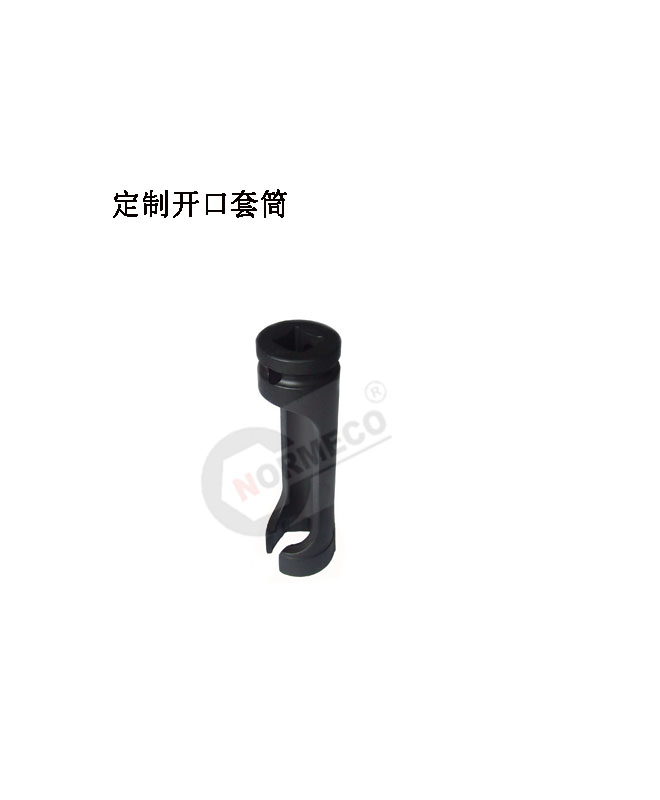
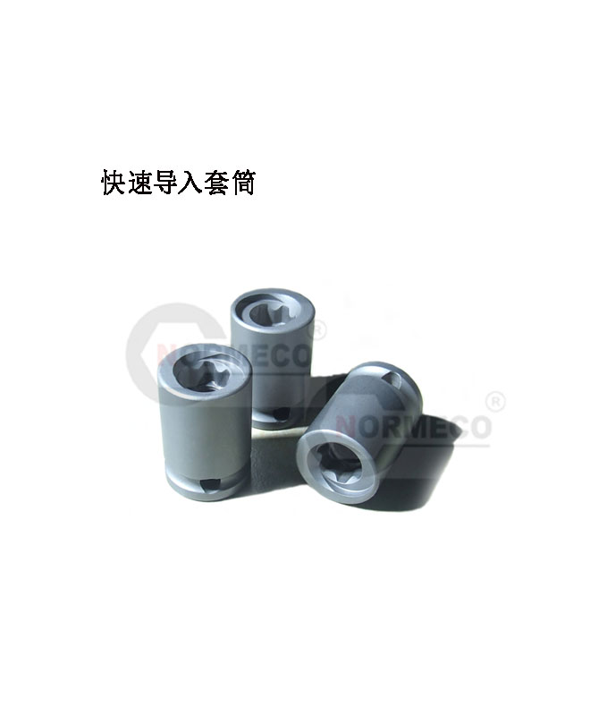
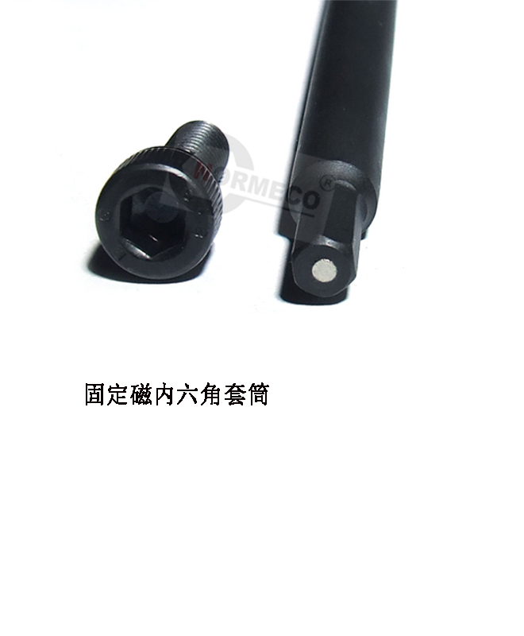
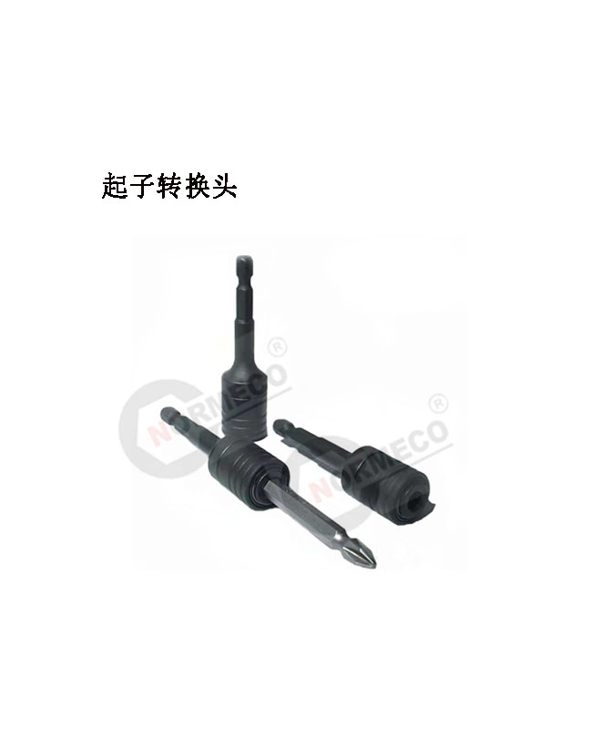
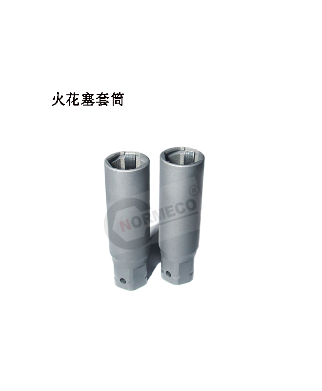
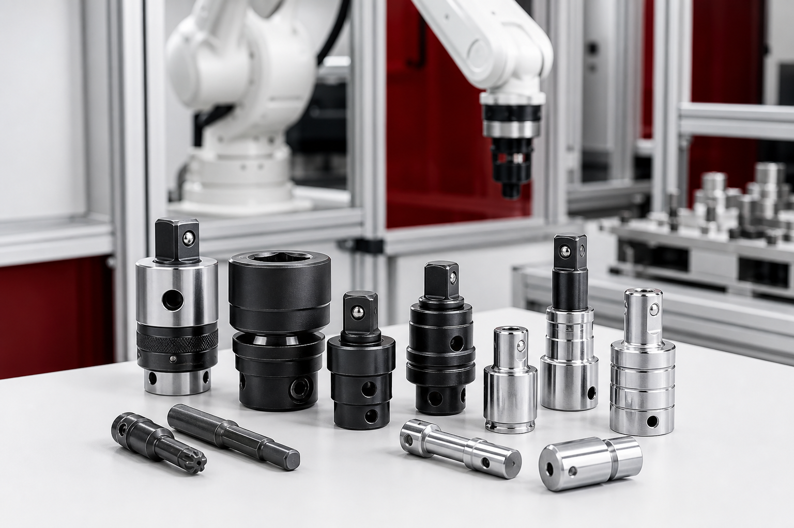

01
定制套筒与异形结构
按紧固件轮廓、空间限制、长度与传动接口开发专用结构。
Custom capability
当标准产品无法满足接口、空间、扭矩或节拍要求时，我们依据实际应用条件确认结构与交付方案。
01
按紧固件轮廓、空间限制、长度与传动接口开发专用结构。
02
面向机器人末端、拧紧轴、工位和自动化设备进行接口适配。
03
解决传动距离、方驱转换、偏置连接和特殊空间操作问题。
04
结合材料、扭矩、使用频率、工作环境和采购数量评估方案。
Project input
不需要一次提供完整的工程文件。图纸、草图、样件照片或清晰的应用描述，都可以作为沟通起点。
二维图、三维模型、草图或多角度照片。
方驱、轮廓、长度、设备接口与空间边界。
目标扭矩、使用频率、环境和装配节拍。
样品数量、预计批量和项目时间要求。
Engineering process
每个阶段先确认关键条件，再进入下一阶段，减少非标项目中的反复与信息缺口。
确认应用、接口、扭矩、空间与数量等基础条件。
沟通结构、材料、关键尺寸和可制造性。
以样品或小批量支持装机、适配与工况验证。
根据确认方案完成项目供货与后续配套。
Custom cases
以下实例展示不同接口、结构与工况下的定制方向。具体尺寸、材料与验证要求需结合项目确认。
横向拖动查看更多产品





实例用于展示定制方向，不代表所有项目采用相同结构；最终方案以工程确认结果为准。

Application
服务机器人集成、自动化装配、设备厂配套、工位改造、维修替换与特殊空间作业。
机器人末端装配
自动化产线与工位
设备厂长期配套
维修替换与特殊工况
FAQ